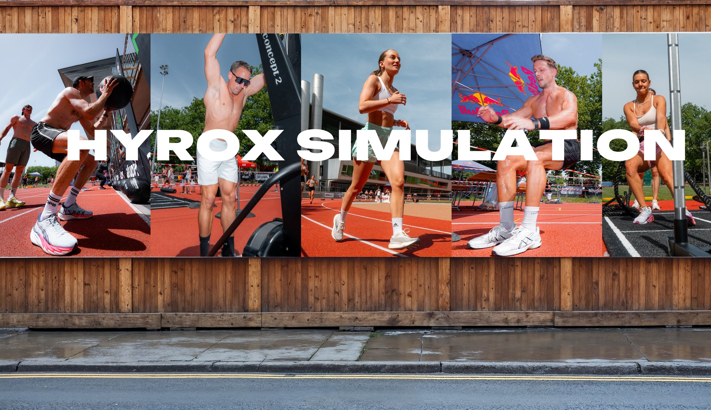
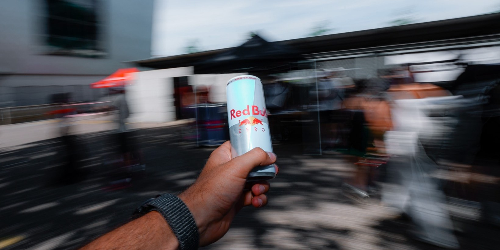

HYROX Simulation?
Hat sich echt angefühlt.

Unser Auftrag
Für uns begann das Projekt nicht erst am Eventtag. Bereits im Januar waren wir mit an Bord und begleiteten ROPE Fitness auf dem Weg zur HYROX Simulation. Neben der Content-Produktion unterstützten wir die Bewerbung des Events im Wankdorf und sorgten mit gezielter Kommunikation dafür, dass die Nachfrage nach Tickets bis zum Eventtag nicht abriss.
Mit Erfolg: Die HYROX Simulation war restlos ausverkauft.
Am Event selbst waren wir mittendrin statt nur dabei. Wir hielten die Energie, die Emotionen und die vielen kleinen Momente fest, die diesen Tag ausmachen – vom ersten Start bis zum letzten Zieleinlauf, von maximaler Anstrengung bis zum gemeinsamen Feiern.
Das Ergebnis: ein dynamischer Aftermovie und eine umfangreiche Bildserie, die den Event nicht nur dokumentieren, sondern das Erlebnis auch über den Veranstaltungstag hinaus weitertragen.

Was wir geliefert haben
Ticket-Kampagne
Content und Kommunikation im Vorfeld, um Aufmerksamkeit zu schaffen und Tickets zu verkaufen — mit Erfolg: Das Event ging restlos sold out.
Highlight-Bilder
Fotos direkt während des Events, sofort einsatzbereit aufbereitet — damit die besten Momente noch am selben Tag auf den Social-Media-Kanälen landen.
Aftermovie
Ein dynamisch geschnittener Rückblick, der die Energie des Tages einfängt — vom ersten Start bis zum letzten Zieleinlauf. Produziert im 16:9- und 9:16-Format, passend für jeden Kanal.
Statement-Reels
Kurze Interview-Reels mit Teilnehmenden und Staff, die persönliche Eindrücke und Emotionen direkt vor Ort festhalten.